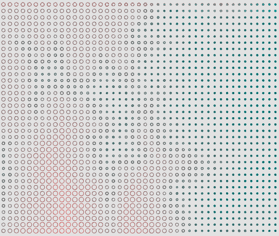
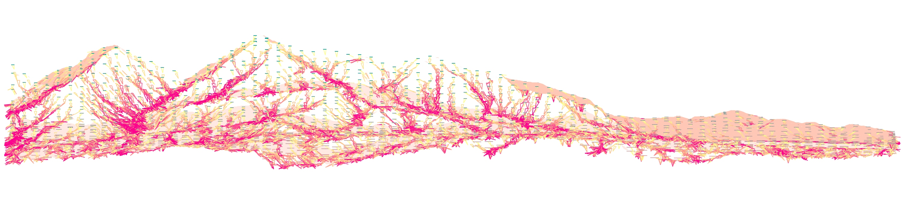
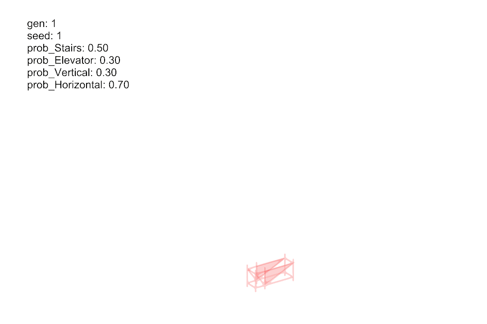
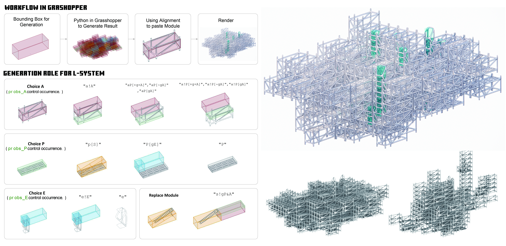
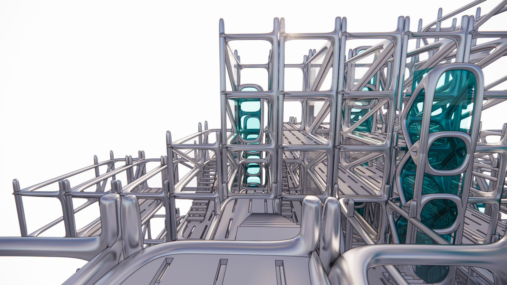
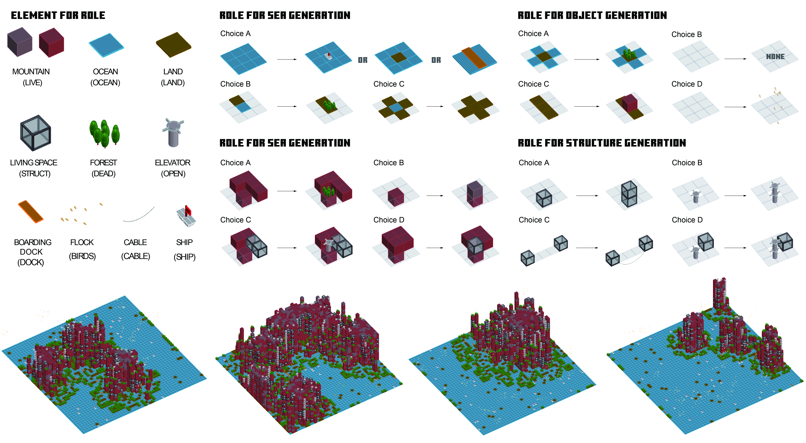
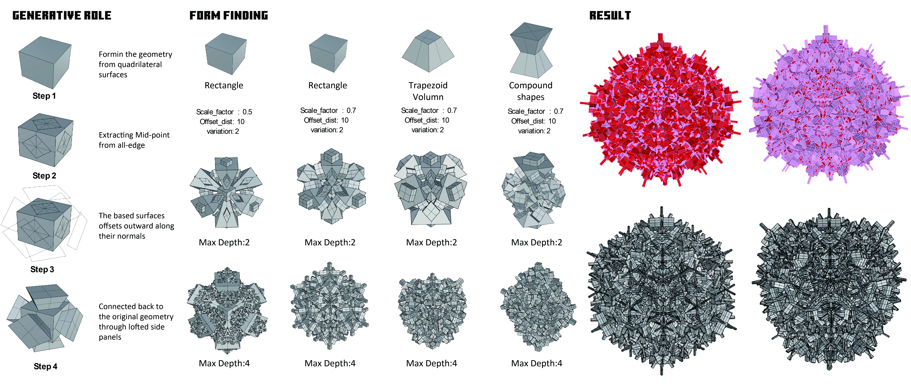
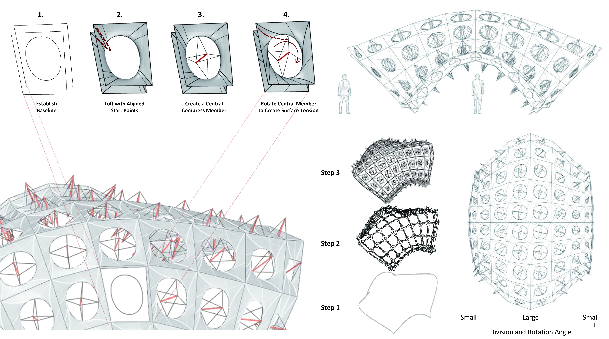
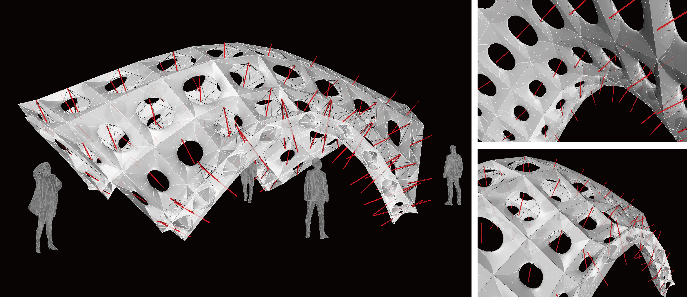

Scripting and Parametric Design
Computational Geometry and Generative Algorithms Practice
L-System Generative Modeling
This project investigates the application of Stochastic L-Systems in 3D architectural composition. By establishing a Spatial Grammar, we abstract architectural elements into symbolic representations (A, P, E, S) and define rewriting rules that simulate the growth of a building akin to biological organisms. The system incorporates stochastic decision-making, ensuring that while structural logic is strictly maintained, the resulting spatial configurations exhibit diverse and non-repetitive morphologies.



Island Builder : Cellular Automata Design
"Island Builder" is a computational tool designed to generate organic archipelago formations within a grid system. Instead of utilizing pure random noise, this algorithm implements a Distance-based Influence Field. By calculating the proximity of grid cells to randomly distributed cluster centers, the system defines a probability map for land formation. This process serves as an advanced initialization technique for Cellular Automata (CA) simulations or procedural game maps.


Recursion Generative Design
This project explores the application of recursive logic in computational design for complex form-finding. By developing a custom algorithmic script, we investigate how a single base surface can evolve into an intricate, three-dimensional spatial structure through iterative geometric operations. The project aims to demonstrate "complexity from simplicity," mimicking natural growth patterns like crystalline formations through defined computational rules.

Subdivision Systems Design
The design logic of this pavilion starts with creating a grid on the base surface, divided by U and V directions. Instead of using equal spacing, a cosine distribution is applied to redistribute the sampling points, so the density and tension of the units respond to the surface’s form. The height of each grid point is normalized and then translated into parameters that control the scale, rotation, and vertical extension of each unit. As a result, every unit adjusts its size and angle according to the surface’s topography. Each unit is lofted from three layers of curves, while diagonal midlines are used to generate tubular supports, forming an inner structural skeleton that reinforces the tension. In the end, the red tubular lines and the white shell surfaces weave together to create a pavilion that both follows the terrain and expresses a dynamic rhythm.

